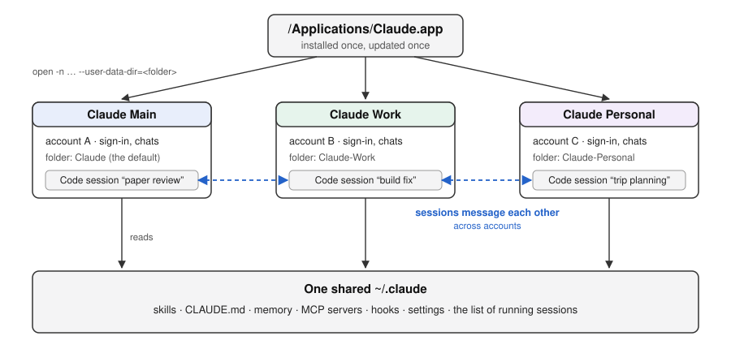

What makes it different
Claude Desktop runs one account at a time. If you open it again, the same window comes back to the front. Other tools work around this by keeping every account fully separate. claude-multi-desktop keeps the sign-ins separate and lets the accounts share the rest:
- Separate accounts, one setup. Each window signs in to its own account and keeps its own chats, projects and plan. Claude Code in every window reads the same
~/.claude: skills,CLAUDE.md, memory, MCP servers, hooks and settings. If you write a skill once, every account has it. - Sessions talk across accounts. A Claude Code session in your Work window can see the sessions in your Personal window and send one a message with Claude Code's built-in
ListAgentsandSendMessagetools. See how. - No dependencies, nothing patched. Each launcher opens the Claude.app you already have with Electron's public
--user-data-dirflag. It makes no copy of Claude.app, re-signs nothing and runs nothing in the background. Claude's updates reach every account.
Who it is for
claude-multi-desktop was designed for one person who has two Claude accounts of their own, a personal one and a work one, that cannot be opened in the same window. That happens in two cases:
- Your personal and work accounts use different email addresses. Each email is its own sign-in, and Claude Desktop holds one sign-in at a time, so without this tool you sign out of one account to use the other.
- Your work account came before your personal one. For example, your employer set up a seat under your work email before you had a personal account, and the personal account you added later is a separate sign-in.
In both cases the tool gives each account its own window, so both stay signed in, while Claude Code keeps one setup for you as a single user.
Other uses. The launchers work for any account folder, so the tool can technically run other kinds of profiles too. That is not what it was built for. If you use it outside the two cases above, you do so at your own risk, and the authors accept no responsibility for the consequences.
Usage quotas. Running several accounts to farm, pool or stretch usage limits is not supported. Issues and pull requests that ask for help with that will be closed.
Quick start
You need macOS and Claude Desktop in /Applications.
brew install jackson-cmd/tap/claude-multi-desktop
claude-multi-desktop add Work # launcher "Claude Work" with its own sign-in
claude-multi-desktop open Work # second window: sign in with your other account
claude-multi-desktop add Main --default # launcher for the account you already useThe launchers go to ~/Applications, so Spotlight, Launchpad and the Dock find them. Drag them to the Dock and click whichever account you want; they can all stay open side by side.
No Homebrew, or would you rather not use Terminal? Install lists a Mac installer, a disk image with a double-click app, npm, PyPI and a Claude Code plugin.
Install
Homebrew is the shortest way. The others are for people without Homebrew, or who would rather not use Terminal.
Homebrew
brew install jackson-cmd/tap/claude-multi-desktopMac installer (.pkg)
Download the .pkg file from the latest release and open it. It installs the claude-multi-desktop command to /usr/local/bin and the double-click app Claude Multi Desktop to /Applications.
The installer is not signed with an Apple Developer ID, so macOS blocks it the first time you open it: see If macOS blocks the app or installer.
To uninstall it:
sudo rm /usr/local/bin/claude-multi-desktop
sudo rm -rf "/Applications/Claude Multi Desktop.app"
sudo pkgutil --forget io.github.jackson-cmd.claude-multi-desktopDisk image (.dmg)
Download the .dmg file from the same release page, drag Claude Multi Desktop to Applications and double-click it. It asks for an account name, an icon style (a coloured letter, your Claude icon with a letter badge, or a picture) and a colour, then makes the launcher and opens it. It can also open, quit, rename or remove launchers you already made, quit every account before a Claude update, and check and repair your launchers. You never need Terminal.
The app is not signed with an Apple Developer ID either: see If macOS blocks the app or installer. The disk image carries the same steps as a text file next to the app.
If macOS blocks the app or installer
If macOS says “Apple could not verify ‘Claude Multi Desktop’ is free of malware”: the app and the installer are not signed with an Apple Developer ID, so macOS blocks them the first time you open them. The code is open source, and you only need to allow it once.
macOS 15 (Sequoia) and later
- Double-click the app (or the
.pkg) once. When macOS blocks it, click Done. - Open System Settings → Privacy & Security and scroll down to the Security section. You will see “‘Claude Multi Desktop’ was blocked to protect your Mac.” (for the installer, its file name). Click Open Anyway.
- Enter your Mac login password (or use Touch ID). If macOS asks once more, click Open Anyway again. From then on it opens normally.
macOS 14 (Sonoma) and earlier
- Right-click (or Control-click) the app (or the
.pkg) and choose Open. - Click Open in the dialog. You only do this once.
Want no warning at all? Install with Homebrew instead: brew install jackson-cmd/tap/claude-multi-desktop.
npm
npx claude-multi-desktop add Work # run it without installing
npm install -g claude-multi-desktop # or install the commandPyPI
uvx claude-multi-desktop add Work # run it without installing
pipx install claude-multi-desktop # or install the command (uv tool install works too)Claude Code plugin
/plugin marketplace add jackson-cmd/claude-multi-desktop
/plugin install account-handoff@multi-desktopThe plugin adds one skill, handoff (also /account-handoff:handoff). It hands a task to a Claude Code session in another account using ListAgents, SendMessage and claude-multi-desktop peers, and relays the reply. It refuses to move work to another account because an account has hit a usage limit. The plugin does not install the claude-multi-desktop command itself; use one of the methods above for that. See Sessions across accounts.
curl or git clone
Install with curl, without Homebrew
mkdir -p ~/.local/bin
curl -fsSL https://raw.githubusercontent.com/jackson-cmd/claude-multi-desktop/main/claude-multi-desktop -o ~/.local/bin/claude-multi-desktop
chmod +x ~/.local/bin/claude-multi-desktop
echo 'export PATH="$HOME/.local/bin:$PATH"' >> ~/.zshrc # then open a new terminalOr clone the repository and run the script from the folder:
git clone https://github.com/jackson-cmd/claude-multi-desktop.git
cd claude-multi-desktop
./claude-multi-desktop add WorkSign-in and updates
Signing in
Each account signs in on its own, once. Open its launcher (or run claude-multi-desktop open NAME), click Log in in that window and finish in the browser. Your other accounts are not touched.
After that you never sign in again. Closing the window, restarting your Mac, updating Claude Desktop, renaming the launcher or updating claude-multi-desktop all keep the sign-in, because it is saved in that account's own folder (~/Library/Application Support/Claude-NAME). Only remove NAME --delete-data deletes it. If the browser sends the sign-in back to the wrong window, quit the other Claude windows, sign in, then reopen them from their launchers.
Updating Claude Desktop
Every account runs the same Claude.app, so one update covers all of them. Before you update, quit Claude in every account: while another account is still open, the update may not install, or the open windows may misbehave.
- Quit every Claude window: run
claude-multi-desktop quit --all, or press ⌘Q in each one. - Open Claude the normal way, or from your Claude Main launcher, and install the update when Claude offers it (or choose Claude → Check for Updates).
- Open your other accounts again from their launchers.
You never need to remake launchers after a Claude update.
Updating claude-multi-desktop
| Installed with | Update with |
|---|---|
| Homebrew | brew upgrade claude-multi-desktop |
| Mac installer or disk image | Download the newer .pkg or .dmg from the latest release and install it the same way |
| npm | npm install -g claude-multi-desktop@latest, or npx claude-multi-desktop@latest |
| PyPI | pipx upgrade claude-multi-desktop or uv tool upgrade claude-multi-desktop; uvx always runs the latest |
| Claude Code plugin | /plugin marketplace update multi-desktop |
Launchers you already made keep working after an update, because they only open Claude.app.
Icons and names
By default a launcher gets a coloured square with the first letter of its name. You can pick another look when you add it, or change it later:
claude-multi-desktop add Work --icon claude # your Claude icon with a coloured letter badge
claude-multi-desktop add Home --icon ~/Pictures/home.png # any PNG, JPEG, HEIC or ICNS picture
claude-multi-desktop icon Work --icon claude --color 2E9D6A # change an existing launcher's icon
claude-multi-desktop rename Work Office # rename a launcher; sign-in and chats stay
claude-multi-desktop list --names # print the launcher names, one per line--icon claude draws your own Claude icon with a coloured letter badge, on your Mac, from the Claude.app you have installed. Nothing from Anthropic is shipped with this tool. rename keeps the account's sign-in and chats; the account's folder (for example Claude-Work) is not renamed.
One limit: the custom icon belongs to the launcher, so you see it in Finder, Spotlight and Launchpad. Once a window is open, the Dock shows the normal Claude icon and name for it, because Claude.app decides that and this tool never modifies Claude.app.
What is shared and what is not
| Separate per account | Shared | |
|---|---|---|
| Sign-in, plan, chats and projects | ✓ | |
| Desktop settings, connectors, extensions | ✓ | |
| Claude Code skills, commands, agents, hooks, settings | ✓ | |
CLAUDE.md, memory and MCP servers | ✓ | |
| List of running Claude Code sessions | ✓ |
Commands
| Command | What it does |
|---|---|
add NAME | Make the launcher Claude NAME with its own sign-in |
add NAME --default | Make a launcher for the account you already use |
add NAME --color HEX | Choose the icon colour, e.g. --color 7A5AE0 |
add NAME --icon claude | Use your own Claude icon with a coloured letter badge, drawn on your Mac |
add NAME --icon /path/to/picture | Use any PNG, JPEG, HEIC or ICNS picture as the icon |
icon NAME --icon … --color HEX | Change the icon or colour of an existing launcher |
rename NAME NEW | Rename a launcher and keep its sign-in and chats (the account folder keeps its name) |
list | Show launchers and which accounts are open |
list --names | Print the launcher names only, one per line |
open NAME | Open that account's window |
quit NAME | Quit Claude in that account, as ⌘Q does |
quit --all | Quit Claude in every account; do this before you update Claude |
doctor [--fix] | Check every launcher; --fix repairs launchers after Claude.app has moved |
peers | Show Claude Code sessions running in every account |
remove NAME [--delete-data] | Delete a launcher, and optionally that account's folder |
FAQ
How do I use two Claude accounts at the same time on a Mac?
Run claude-multi-desktop add Work, open Claude Work and sign in with the second account. Your first account keeps working in its own window. The step-by-step guide has the details.
Why does opening Claude a second time just bring the same window back?
Claude Desktop allows one running copy per data folder. A launcher starts Claude with a different data folder, so macOS opens a second, independent window.
Do my Claude Code skills, CLAUDE.md and MCP servers work in every account?
Yes. Every account reads the same ~/.claude. If work data must stay inside a work account, use a tool that isolates Claude Code as well, such as claude-multiprofile.
Can Claude Code sessions in different accounts talk to each other?
Yes. Ask a session to list the other sessions on this Mac and to message one of them. Read the guide.
Do I need Terminal?
No. The disk image has a double-click app that asks for a name, an icon style and a colour, makes the launcher and opens it. The command line does the same and also lets you script it.
Why does the Dock show the normal Claude icon for an open window?
The custom icon belongs to the launcher. Once a window is open, the Dock icon and name come from Claude.app, and this tool never modifies Claude.app, so they stay as Claude ships them.
Does this modify, copy or re-sign Claude.app?
No. Launchers only open the Claude.app you already have, with a public Electron flag.
Disclaimer
claude-multi-desktop is an independent open-source project. It is not affiliated with, endorsed by or supported by Anthropic. “Claude” and “Claude Desktop” are trademarks of Anthropic.
Intended use. The tool is built for one person who keeps a personal and a work Claude account open side by side, as described in Who it is for. Any other use, such as running other kinds of profiles, is outside its intended use and entirely at your own risk.
Acceptable use. Use this tool only for legitimate purposes and only with Claude accounts you are entitled to use. Do not use it:
- to abuse usage quotas, that is, to get around, farm, pool or stretch usage limits, rate limits or plan restrictions, for example by switching to another account to keep working after one has reached its limit. This project does not support such use;
- to share accounts or sign-ins with other people, or to use accounts that are not yours;
- for anything that Anthropic's Consumer Terms, Commercial Terms or Usage Policy, or your employer's rules, do not allow.
You are responsible for how you use your accounts. Anthropic may restrict or close accounts that break its terms, and the authors of this project accept no responsibility for that or for any other consequence of using it. The software is provided “as is”, without warranty of any kind.